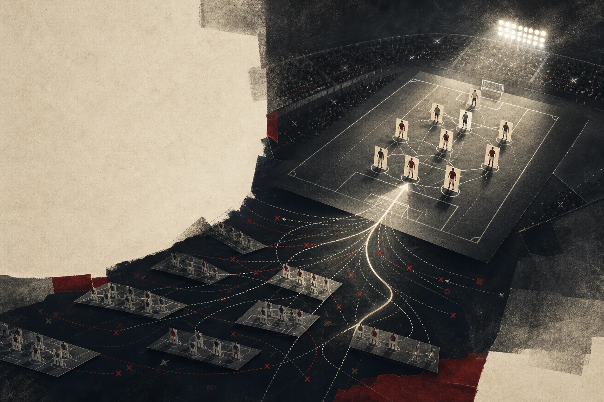

Picking the
first fifteen.
How ten seasons of public evidence, a GPU-trained forecast and two independent simulation engines converged on one provisional Gameweek 1 squad.

Evidence before certainty · No. 01The search, illustratedOne hundred and twenty-eight legal squads enter two different simulations. The point is not to make uncertainty disappear, but to find which decision keeps surviving it.
Abstract
Fantasy Premier League invites a familiar mistake: rank the players, squeeze fifteen names under £100m, and call the answer optimal. But a player forecast is not a squad; a squad is not a five-week plan; and a high average score is not proof that the decision survives a different view of football.
FPLAgent was rebuilt around those distinctions. It asks what was knowable before each historical deadline, forecasts participation separately from returns, solves the legal game across several weeks, and then attempts to defeat its own answer.
The conclusion is deliberately narrower than certainty: no tested route has earned a repeatable edge over S001 under the information available today.
That makes S001 a solid provisional picker. It does not make it clairvoyant. Summer roles, late transfers and team news remain capable of moving the answer—and the system is designed to admit it when they do.
First, make the past stop leaking.
Most historical football data is tidy because the match has already happened. That is precisely the danger. A useful decision model must reconstruct the messy, incomplete world that existed before the deadline.
Ten seasons, several imperfect windows.
Public data is treated as evidence with provenance—not an interchangeable bucket of truth. Each source has a defined job and an explicit limitation.
One row per historical player and decision event after double-gameweek aggregation.
Historical same-gameweek expected points may have been captured after matches. It is retained only as an unsafe diagnostic.
Preserve raw
URL, fetch time, bytes, status and SHA-256 enter an append-only manifest.
Resolve identity
Season-specific player IDs join through the more stable FPL player code.
Lag every window
Rolling form ends one event before the target. Current-gameweek values never enter.
Fail hard
Duplicate keys, late snapshots, synthetic pre-era data or target leakage stop the build.
Good process shifts the distribution. It does not abolish luck.
The 2025/26 top 100 averaged 2,504.1 points against 2,090.9 for the 3.53 million active-manager population: a 413.2-point gap. Solio attributed 234.6 points to projected decision quality and 178.7 to finishing above projection.
Only two actual top-100 managers were themselves projected top 100. The system therefore optimises expected decisions; it does not pretend that a deterministic model can promise first place.
Thirteen ways bad data is refused entry.
The final model table has 54 columns, of which 41 are approved predictors. Every rolling player window ends at the previous event. Pre-2022 expected statistics and pre-2025 defensive-contribution fields stay null rather than becoming fictional zeroes. Coventry and Hull's missing Premier League priors remain missing; Ipswich's 454-day-old state remains visibly stale.
A decimal forecast hides two different questions.
Will the player appear? If he does, what is he worth? Treating those as one regression rewards safe predictions near zero and masks rotation risk. FPLAgent models them separately for every position.
Four positional ensembles, two seeds each.
- EngineXGBoost 3.3
- DeviceCUDA:0
- HardwareRTX 5090
- Point trees250 × 2
- Minute trees242 × 2
- Features41
- Training rows244,425
Accuracy alone is not enough.
The challenger must beat availability-adjusted five-event form where the optimiser actually shops: ranking, the top shortlist and GW1.
| Unseen test season | Model MAE | Form MAE | Top-k lift | Legal GW1 model | Legal GW1 form |
|---|---|---|---|---|---|
| 2023/24 | 0.958 | 0.984 | +0.417 | 35 | 35 |
| 2024/25 | 0.999 | 1.032 | +0.472 | 56 | 40 |
| 2025/26 | 0.982 | 1.053 | +0.396 | 48 | 46 |
Each season is trained only on earlier seasons, with the latest prior year reserved for early stopping. The legal GW1 replay adds 18 points over three seasons with no losing year. Three decisions remain far too few to estimate the true edge; the result is encouraging evidence, not a victory lap.
The best eleven this week is not necessarily the best fifteen to own.
FPL has a budget, formation rules, a bench, captaincy and transfers that carry. The answer must be a legal route through those constraints—not a sorted spreadsheet.
The provisional first fifteen.
HiGHS solves binary membership, starter, captain and transfer decisions over GW1–GW8. Rules are loaded from the live API and validated again after the solve.
- Squad cost£99.5m
- Bank£0.5m
- Formation5–2–3
- CaptainBruno
- Vice-captainSenesi
- HorizonGW1–GW8
- Decay0.88
The best squad forced to differ from S001 changes only the second goalkeeper—Verbruggen to Leno—and scores 317.194 against 317.219 over the weighted eight-week objective. That hairline gap is not hidden. It tells us confidence belongs in the core and shape, not every peripheral name.
Across 20 forecast-error perturbations, only 25% recover the exact same fifteen, but the mean incumbent player survives 92% of runs; eleven players appear in at least 90%; and Bruno remains captain 85%. Changing the future decay from 0.80 to 0.95 leaves the initial squad and captain unchanged.
The objective weights each future gameweek by 0.88g−1, adds the captain's points a second time, and gives the deterministic bench a deliberately small 8% autosub proxy. Exact substitutions are handled later in simulation. Free transfers may carry to five; a roll is a valid action; transfer activity receives no reward.
One optimum is an anecdote. Build it some enemies.
Premium-heavy squads, lean benches, alternative decays and perturbed forecasts were not discussed hypothetically. They were solved into 128 legal challengers, then sent through an unseen 25,000-path holdout.
A family resemblance, not a clone army.
Pairwise overlap ranges from four to fourteen players. The field spans four bench bands, five noise levels, three horizon decays, every £9m+ MID/FWD premium and leading premium pairs.
Give every finalist the same transfer rights.
S002 edges the incumbent by 0.28 as a frozen squad. Once both receive the same legal free-transfer planning envelope, that order reverses.
The uncertainty has to resemble history.
The residual engine uses 84,999 rolling out-of-fold forecasts. Its P10–P90 interval contains 79.75% of 36,442 historical player/gameweeks, close to the intended 80%, with −0.050 mean-point bias.
Big names were forced into the room. Price made them answer harder questions.
A preseason recovery stress raises availability for highly owned £9m+ attackers after long summer breaks. Haaland rises from 3.41 to 4.67 GW1 xP, Saka from 3.50 to 3.88 and Isak from 1.74 to 2.81. S001 still holds. Their absence is an opportunity-cost result, not a claim that they are poor footballers.
The bench receives the same treatment. S001 leaves £23.0m off the pitch, an amount that looks wrong if bench spend is assumed to be dead money. Thirty-five lean-bench candidates, thirty-five medium-low, thirty-five medium and twenty-three deep-bench constructions test that assumption.
S002's £21m bench produces the best fixed mean. S001 wins only when transfer routes and exact autosub resilience enter. The system never rewards an expensive bench; it asks whether the extra option value earns its opportunity cost. This remains one of the least settled parts of the squad.
What if the first simulator is faithfully wrong?
Historical residuals preserve real error patterns, but they do not enforce football identities. A second engine predicts goals, reconstructs events, and scores every simulated match from the current rules.
Residual lens
Start with the direct xP forecast. Add correlated gameweek, team, player and appearance errors learned from forward historical misses.
Component lens
Generate scorelines and minutes. Allocate on-pitch scorers and assists. Derive clean sheets, saves, cards, defensive contributions and bonus.
The richer model is deliberately kept on a short lead.
Goals, assists and bonus models pass season-forward promotion; saves do not and fall back to an empirical rate. The full component reconstruction is tested on 2024/25, where 5% raw component plus 95% incumbent xP wins the shortlist comparison. That blend is then frozen before 2025/26, where it scores 3.981 top-k realised points against 3.954 for xP.
The tempting 100% raw component result performs brilliantly on 2025/26—but worse on the season used for selection. It is not allowed to rewrite the decision after the fact. Complexity is a challenger, not a throne.
| Component integrity gate | Observed | Meaning |
|---|---|---|
| Rule reconstruction | 99.9931% | 86,749 / 86,755 player-fixtures exact |
| Sampled goals reconciled | 3,319,250 | Only 132 own/unattributed; no assist exceeds a goal |
| League points per match | 89.15 | Actual 2025/26: 90.48 · xP-implied: 91.96 |
| Bonus conservation | 6.00 | Exactly six bonus points per match scenario |
The independent search discovers fifteen new legal squads across component weights from 0% to 100% and decays from 0.80 to 0.95. C002 comes closest—but scores 310.80 against S001's 311.00 under the historically supported decision blend, a paired Monte Carlo interval of −0.32 to −0.07.
The literal raw-component leader, C014, looks dramatic and finishes 22.67 decision points below S001 after anchoring to the evidence-selected weight. The promotion gate passes because the component system is coherent and adds tested information; the recommendation remains S001 because the new candidates fail to beat it.
Why S001 is solid—without pretending it is certain.
The case is cumulative. No individual statistic carries the recommendation; a chain of independent refusals does.
- The inputs respect time.Lag checks, snapshot timing and forbidden-feature gates prevent the easiest forms of hindsight.
- The forecast wins where decisions happen.It beats a frozen form baseline across MAE, ranking, shortlists and legal GW1 replays.
- The solver models the FPL problem.Budget, formation, clubs, captaincy, bench and free-transfer carry are constraints—not prose.
- The core survives perturbation.Different decays, model noise, availability recovery and bench structures preserve the central construction.
- Two simulators keep the same answer.A historical residual engine and a component football engine disagree in useful ways but retain S001.
- Disagreement stays visible.S002 wins the fixed contest, C014 wins raw components, and the second goalkeeper is nearly a coin toss. None is hidden.
The most dangerous errors are not inside the confidence interval.
Twenty-five thousand paths can make simulation noise tiny while missing an injury, a new tactical role or an entire class of model error. Precision is not the same as completeness.
No prospective season yet
Every inspected historical year is now development evidence. The first untouched test begins when 2026/27 pre-deadline receipts are frozen.
Only three legal GW1 replays
The +18-point total is promising but far too small to quantify expected edge, downside or podium probability.
Minutes are the live fault line
Friendlies, new managers, transfer windows and late injuries can move premium participation far faster than historical features.
Promoted clubs are cold
Coventry and Hull have no Premier League team prior; new signings have no cross-league translation. Missing values are honest, but not an edge.
One defensive-contribution era
Only 2025/26 is directly comparable. The five-defender construction is an evidence-led hypothesis, not established doctrine.
The component match is approximate
Uniform goal times, simplified assists, incomplete BPS tie logic and empirical defensive contributions are transparent simplifications.
The horizon omits strategic state
Hits, chips, sale value, price scenarios, postponements and terminal value beyond GW8 are not yet represented.
Public does not mean licensed
Undocumented endpoints can change and public retrieval does not automatically permit redistribution inside a paid product.
Improve the ways the picker can be confidently wrong.
The immediate answer is not a larger neural network. It is fresher evidence, stronger cold starts and a truly sequential policy test.
Immutable live snapshots
Store every official response by timestamp and content hash. Diff status, price, ownership, club, fixtures, rules and selectable state; bind every recommendation to one source bundle.
Gate · byte-for-byte replay from an immutable receiptPreseason minutes and roles
Capture friendly lineups, substitutions, injuries, suspensions and reliable role evidence with timestamp, expiry and source quality. Combine it with the historical prior rather than silently overwriting it.
Gate · better held-out play Brier/log loss and squad replayCold-start hierarchy
Translate prior-league player performance with explicit uncertainty and shrink promoted-club attack/defence toward historical promoted-team distributions.
Gate · beat current new-to-league baselines out of seasonProspective shadow runs
Regenerate at material changes and T−72h, T−24h, T−6h, T−60m and T−10m. Every changed answer must explain the source and forecast deltas that caused it.
Gate · no unaudited recommendation changeSequential season replay
Start from a generated GW1 squad and replay each historical deadline with only then-available information. Choose roll, transfers, XI, bench and captain; debit hits; preserve transfer and value state.
Gate · beat frozen form, champion, template and roll policiesFootball fidelity
Reconstruct official BPS and ties, model shots on target faced, penalties, lineup covariance, schedule uncertainty and chip opportunity cost. Promote each only on season-forward decision value.
Gate · decision lift, not simulation spectacleThe product layer
Expose one versioned answer for transfers, roll, XI, captain, vice, bench and chips. Use screenshot OCR to recover team state, then let the numeric engine work with the LLM switched off.
Gate · fast, legible and trustworthy before the deadlineMethods, sources and receipts.
The narrative above is designed to be read. The notes below are designed to be challenged.
A.1Sources and provenance
The live 2026/27 bundle was fetched from FPL's public no-login endpoints. The frozen bootstrap was collected at 2026-08-02 10:02:54 UTC, contains 564 raw players, 20 teams and 38 events, and hashes to 41eb63c7…8a50f. The current modelling grid retains 559 selectable players over GW1–GW8.
Manager datasets are descriptive and survivorship-selected. They form hypotheses about transfers, captaincy, bench allocation and variance; they never become labels that say “copy the winner.” FPL Genius is isolated and is not a production dependency. Public retrieval remains distinct from commercial redistribution rights.
A.2The 41-feature contract
Features cover fixture count and context; player history length and recency; lagged points and minutes over 1/3/5/10/38-event windows; appearance and start rates; five-event goals, assists, xG, xA, BPS, clean sheets and defensive contributions; price and ownership percentile; official availability; penalties and set-piece order; lagged team/opponent attack and defence over five and ten matches; match history and rest; cold-start status; and deadline-proxy availability.
SQL windows end with 1 PRECEDING. A historical double gameweek is one decision row with aggregated target points plus fixture count and average context. Expected-stat eras remain null before collection began. Raw historical xP/ep_this is forbidden.
| Quality class | Observed result |
|---|---|
| Identity and keys | 0 null player codes; 0 duplicate player/event keys |
| Lag reconstruction | 0 last-points or form-five mismatches |
| Timing | 0 observations after inferred deadline |
| Era honesty | 0 synthetic pre-era xG values |
| Target isolation | 0 forbidden fields in the production allowlist |
| Current pool | 61 GK · 185 DEF · 247 MID · 66 FWD |
A.3Forecast model specification
There are four position-specific hurdle ensembles. Two minute classifiers predict DNP, 1–59, 60–89 and 90+; two point regressors fit only played rows. Seeds 17 and 43 are averaged.
| Parameter | Conditional points | Minutes class |
|---|---|---|
| Objective | Squared error | Multi-class soft probability |
| Final estimators | 250 | 242 |
| Learning rate | 0.035 | 0.040 |
| Maximum depth | 5 | 4 |
| Minimum child weight | 8 | 8 |
| Row / column sample | 0.82 / 0.82 | 0.85 / 0.85 |
| L1 / L2 | 0.15 / 6.0 | 0.10 / 6.0 |
| Tree method / device | Histogram / CUDA:0 | Histogram / CUDA:0 |
Training fails closed if a real GPU fit cannot remain on CUDA. Ensemble disagreement is augmented by 0.65 for cold starts and 0.20 for fewer than five historical events. The audit field robust_points = xP − 0.15 × uncertainty is recorded; the current optimiser uses the mean xP while uncertainty is attacked through perturbation and simulation.
A.4Optimisation objective and legal state
HiGHS solves exact binary variables for squad, starter, captain and transfer decisions plus the integer free-transfer bank. The objective over event g is:
Σg 0.88^(g−1) × [ Σi xP(i,g)·start(i,g)
+ Σi xP(i,g)·captain(i,g)
+ 0.08 Σi xP(i,g)·(squad(i,g)−start(i,g)) ]
The captain term creates the double score. A 10^-6 transfer penalty breaks point-equivalent routes toward less activity. Hard constraints enforce £100m, 2/5/5/3, a legal XI, no more than three per club, exactly one starting captain, balanced ins/outs and free-transfer carry from one to five. Hits, chips, sale value and price changes are not yet in this optimiser.
A.5Residual and component simulations
The residual engine decomposes played-player error into position/gameweek, shrunk team/fixture and player-strength-conditioned idiosyncratic shocks. Gaussian-copula latent terms carry adjacent-event appearance and return persistence: play_rho=0.0586, points_rho=0.0162. Residual scales—GK 0.65, DEF 0.40, MID 0.40, FWD 0.45—were selected on 2024/25 coverage and frozen for 2025/26.
The component engine uses a CUDA XGBoost Poisson team-goal model trained on 5,643 fixture-side rows from 2018/19–2025/26. Separate 450-tree player Poisson models challenge lagged baselines for goals, assists, bonus and saves. Goals, assists and bonus pass both forward seasons; saves is rejected for losing too much event-level ranking correlation.
Every match path samples minute class and on-pitch interval, correlated scorelines, uniform goal times, on-pitch scorers and assists, goals conceded, saves, cards, penalties, defensive contributions and 3/2/1 bonus. Exact formation-valid autosubs and captain-to-vice fallback are applied after scoring.
A.6Current transfer path and caveat
| Event | Current eight-week receipt | Status |
|---|---|---|
| GW2 | Mukiele → Hill | Provisional |
| GW3 | Mbeumo → Semenyo | Provisional |
| GW4 | Igor Thiago → Watkins | Provisional |
| GW5 | Roll | Horizon-sensitive |
The five-week finalist instead uses Truffert → Justin in GW5. That disagreement is information: terminal value and horizon matter. Only the initial squad is the current recommendation. Every future move must be re-solved after new matches, prices and availability.
A.7Principal artifact hashes
| Artifact | SHA-256 |
|---|---|
| Live bootstrap | 41eb63c76cb6…e348a50f |
| Live fixtures | 9e7484118381…2d73bd3e |
| Current rules | 0bfb624a730e…5af0244b |
| Deadline feature table | eab3a9e1adbd…f20010877 |
| forecast_v2 model | dcfbd27c27ce…b59cd95f |
| Current xP forecast | 44eef5e5ec08…adec6b261 |
| Initial squad receipt | 378f8c32f425…bd19f127 |
| 128 candidate field | fb10e1cde355…f98f029 |
| Residual tournament | 072e8716d87b…6ed0913c |
| Goal model | ee5a3b81cb2c…4dff9424 |
| Player event models | c297e11ffd77…e0ddbf9 |
| Component blend test | 0d8d3f64f5f5…449d0d8a |
| Component candidates | 6046ccc2915e…f03397ab35 |
| Component tournament | c3cbbaf0d675…0fec4300e2 |
A.8Reproduce the evidence
uv run fpl-data validate uv run fplagent prepare --horizon 8 uv run fplagent gpu-check uv run fplagent train uv run fplagent backtest-picker uv run fplagent forecast uv run fplagent squad --stability-samples 20 uv run fplagent tournament --candidates 128 \ --selection-simulations 5000 --holdout-simulations 25000 uv run fplagent train-components uv run fplagent train-component-events --force-targets uv run fplagent forecast-components uv run fplagent backtest-components uv run fplagent component-tournament --simulations 25000 --seed 20260804 uv run ruff check . uv run pytest -q
At publication, the data validator returns status: ok, lint is clean and the suite reports 28 passed. Read the full technical report for every table, supporting report and implementation link.